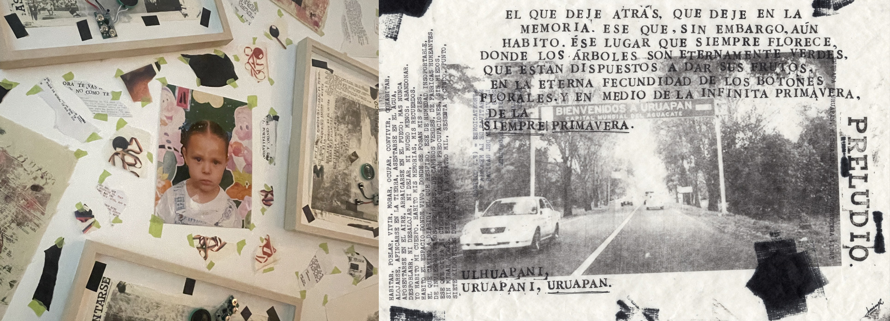
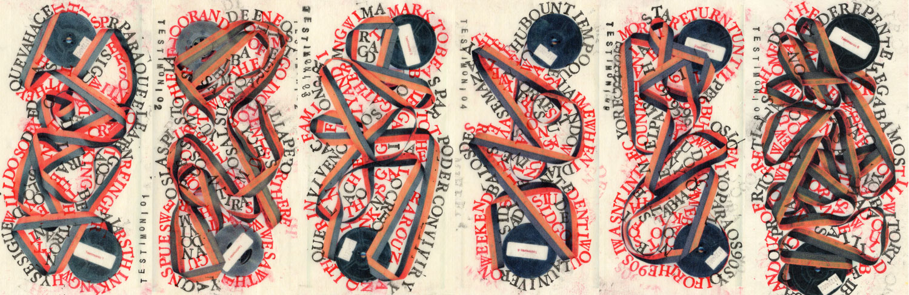
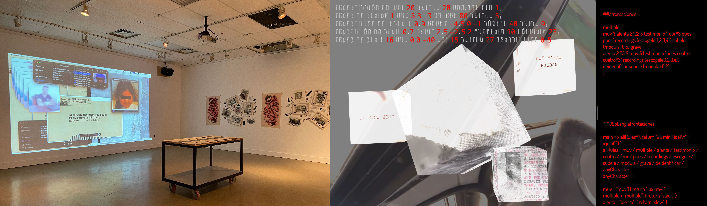

afrontaciones (f.) copings
Narratives of Memory and the Violence of Inhabiting
Digital Mixed-Media Installation and Performance

As a person who grew up in Uruapan, and who maintains strong familial ties to this city in Mexico, I have observed how violence—produced by organized crime and the government—becomes embedded in our personas. It affects our everyday activities and shapes our identities and memories, even beyond the geographical space of the city.
afrontaciones (f.) copings is an auto-ethnographic and artistic project centred on the creation of testimonies and collective story-sharing through the complex experience of inhabiting a city crossed by violence.
The project combines six audio-video testimonies shared by individuals from my hometown and one self-testimony. These personal narratives form the basis for an exploration of memory, identity, violence, and connection.

The testimonies are brought together through a tapestry of digital, printed, and installation-based materials. These include the original Spanish-language audio testimonies, newly produced English dubbing, mixed-media collages created through photo-lithography, stamping, collage, and other hand-printing techniques, typed testimonies, a tape-recorded self-testimony, acetate prints, videos recorded in Uruapan, found footage related to disappearance in Mexico, and video sections developed from each testimony.
Installation and Performance
In the installation space, I combine digital and physical formats through video, print, sound, and handmade materials. The project takes shape both as an exhibition and as a performance-based work.
In the exhibition, testimonies appear through mixed-media collages, typed and printed texts, acetate prints, video sections, and audio elements arranged throughout the space.

In the performance version, these same materials are reworked live through audiovisual composition.
A central part of this process is TransMit, a self-designed programming language for live video manipulation. I use it to shape and reshape the project’s visual material through live coding and electronic literature practices.
Testimonial audio, English dubbing, video fragments, text, and scanned images become materials that can be layered, transformed, and activated in real time.
About the Artist
Jessica A. Rodríguez is a Mexico–Canada media artist, designer, and researcher.
She holds a PhD in Communication, New Media, and Cultural Studies from McMaster University in Canada, a Master’s degree in Fine Arts, and a BA in Visual Arts.
She is a co-founder of Andamio , a collaborative platform that brings technologies into contact with practices combining text, visuals, and sound.
She has collaborated with composers, writers, designers, and visual artists to explore visual music, electronic literature, video experimentation, virtual reality, sound art, live coding, and other interdisciplinary media practices.
Links and Contact
Project archive: andamio.in/prod/afrontaciones
Vimeo: vimeo.com/jessicaarianne
Instagram: @jessariannerod
Email: rodrij28@mcmaster.ca
Acknowledgment
This project was supported by the City of Hamilton through the City Enrichment Fund and shaped through the generous contributions of Hamilton-based artists and participants from Uruapan, Mexico, who shared their testimonies.
Credits (English Dubbing)
Dylan Callaghan, Mariana Fonseca Hernández, Christian Downey-Acevedo, Charlotte Payne, Derek Blaha, Briana Palmer, Carmela Alfaro-Laganse, January Burbage, and Yuma Dean Hester.